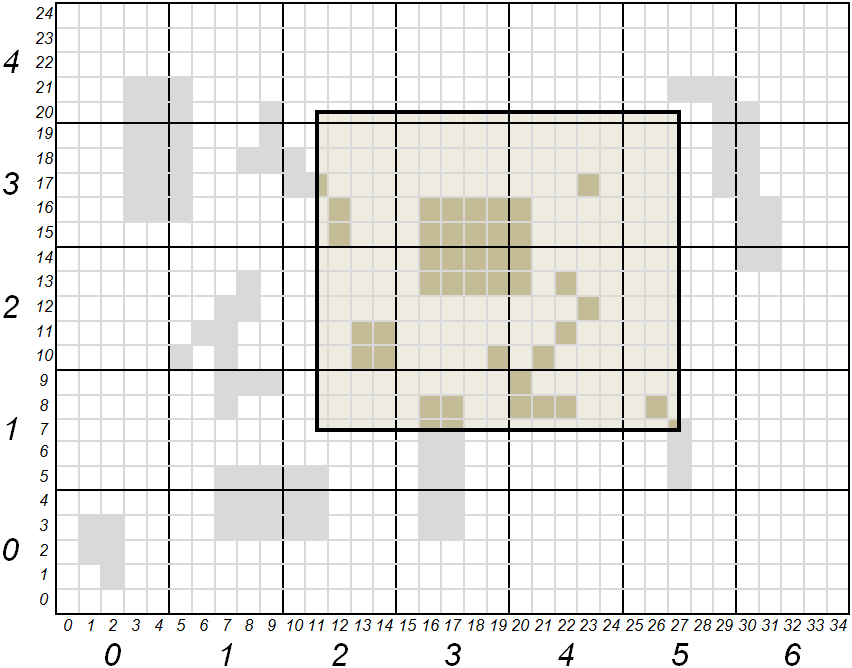

Coverage Analyzer¶
- Author:
Jerome Boue
NAME¶
mapcache_detail - Coverage analysis of MapCache SQLite Caches
SYNOPSIS¶
mapcache_detail [ options ]
DESCRIPTION¶
mapcache_detail main use case is users wanting to use offline a portion of a MapCache cache covering a given geographical region. For that purpose, they need to identify relevant files from an existing cache, check whether tiles are missing from these files (possibly seeding missing parts if necessary), and extract these files to build a new cache of the requested region.
mapcache_detail, helps users with some of these activities. It works with SQLite caches where one single file may contains thousands of tiles. It is able to:
Determine which SQLite files from the cache are needed to cover a given geographical region at a given zoom level range;
Count how many tiles are needed to cover the region and how many are already present in each file, giving a coverage ratio on file level, zoom level and global level;
Estimate data size of missing tiles, which need to be downloaded to entirely cover the requested region, again on file level, zoom level and global level.
mapcache_detail is able to handle all kinds of SQLite caches that MapCache itself handles, namely:
Single SQLite caches, where only one SQLite database contains the whole cache;
Multiple SQLite caches, where cache is split into multiple SQLite databases according to a given template;
Composite SQLite caches, which are a combination of single and multiple SQLite caches depending on zoom levels.
mapcache_detail takes the form of an independent CLI executable using MapCache library. It is proposed as a simple contribution to the MapCache project under a contrib/mapcache_detail/ folder, due to its specific purpose (only SQLite caches are handled).
OPTIONS¶
Some option have the same syntax and meaning as those of mapcache_seeder utility.
Miscellaneous options¶
- -h, –help
Display help message and exit.
- -o, –short-output
(Optional) If this option is present, only Existing SQLite files are reported, missing SQLite files are still taken into account for level and global coverage.
Options for specifying the cache to analyze¶
- -c, –config MapCache configuration file
(Required) Set MapCache configuration file in which cache to analyze is specified.
- -t, –tileset tileset name
(Required) Set the tileset to analyze.
- -g, –grid grid name
(Required) Set the grid to analyze.
- -D, –dimension DIMENSION_NAME=VALUE
(Optional) Set the value of a dimension. This option can be used multiple times for multiple dimensions.
- -q, –query <value>
(Optional) Set SQL query for counting tiles in a rectangle. Default value, given below, works with default schema of SQLite caches.
SELECT count(rowid) FROM tiles WHERE (x between :minx and :maxx) AND (y between :miny and :maxy) AND (z=:z) AND tileset=:tileset AND grid=:grid AND dim=:dim;
Options for specifying the region to cover¶
- -z, –zoom minzoom[,maxzoom]
(Optional) Set min and max zoom levels to analyze, separated by a comma, eg: 12,15. If maxzoom is absent, only zoom level specified by minzoom is analyzed. Default value is 0.
Rectangular region¶
- -e, –extent minx,miny,maxx,maxy
(Optional) Set the extent to analyze. Default value is the whole grid extent. This option cannot be used with –ogr-datasource option.
Polygonal region¶
- -d, –ogr-datasource OGR data source
(Optional) Set the OGR data source to get features from. Any OGR Vector Format can be used. If absent, the region is specified using –extent option, possibly its default value. This option cannot be used with –extent option.
- -l, –ogr-layer layer
(Optional) Select the layer inside OGR data source. This option works only if –ogr-datasource has been specified. This option cannot be used with –ogr-sql option.
- -w, –ogr-where filter
(Optional) Set a filter to apply on OGR layer features. This option works only if –ogr-datasource has been specified. This option cannot be used with –ogr-sql option.
- -s, –ogr-sql SQL query
(Optional) SQL query to filter inside OGR data source. This option works only if –ogr-datasource has been specified. This option cannot be used with –ogr-layer or –ogr-where.
COUNTING TILES¶
To illustrate the process, here is an example of a fictional grid. Tiles are represented by the smallest squares on the grid. Larger squares of 25 tiles each represent SQLite files. Small indices denote tile coordinates whereas large indices denote databases coordinates. Colored rectangle represents requested region for cache extraction. Darker tiles represent tiles present in cache.

Expressed in tiles, region coordinates (xmin, ymin, xmax, ymax) are (11, 7, 27, 20). Expressed in SQLite files, these coordinates are (2, 1, 5, 4). All files whose coordinates are comprised between (2, 1) and (5, 4) included shall be part of the cache extraction. All tiles whose coordinates are comprised between (11, 7) and (27, 20) included shall be counted for the region coverage.
Following table gives tile count and coverage ratio of requested region, according to tool’s process:
SQlite file |
(2,1) |
(2,2) |
(2,3) |
(2,4) |
(3,1) |
(3,2) |
(3,3) |
(3,4) |
(4,1) |
(4,2) |
(4,3) |
(4,4) |
(5,1) |
(5,2) |
(5,3) |
(5,4) |
Total |
|---|---|---|---|---|---|---|---|---|---|---|---|---|---|---|---|---|---|
Tiles present in cache and covering region |
0 |
4 |
3 |
0 |
4 |
9 |
8 |
0 |
4 |
6 |
3 |
0 |
2 |
0 |
0 |
0 |
43 |
Tiles needed to fully cover region |
12 |
20 |
20 |
4 |
15 |
25 |
25 |
5 |
15 |
25 |
25 |
5 |
9 |
15 |
15 |
3 |
238 |
Coverage |
0 |
0.2 |
0.15 |
0 |
0.267 |
0.36 |
0.32 |
0 |
0.267 |
0.24 |
0.12 |
0 |
0.222 |
0 |
0 |
0 |
0.181 |
OUTPUT REPORT¶
Tool’s output, in JSON format, provides user with SQLite file list to be extracted from cache. Details are given on the number of tiles contributing to region coverage. A synthesis is also given for each zoom level and at a global level.
Following is a fictional example describing information present in tool’s output.
{ _______________________________________
"layer": "example", | Report starts with general information
"grid": "local", | on cache and requested region
"unit": "m",
"region": {
"bounding_box": [ 11, 7, 27, 20 ],
"geometry": {
"type": "Polygon",
"coordinates": [[ [11,7], [11,20], [27,20], [27,7], [11,7] ]]
}
},
"zoom-levels": [ {
"level": 1,
"files": [ { _______________________________________
| For each file, output report gives:
| its name, its size, its bounding box
| and intersection of that bounding box
| with requested region
"file_name": "/path/to/cache/example/1/2-1.sqlite",
"file_size": 54632,
"file_bounding_box": [ 10, 5, 14, 9 ],
"region_in_file": {
"bounding_box": [ 11, 7, 14, 9 ],
"geometry": {
"type": "Polygon",
"coordinates":
[[ [11,7], [11,9], [14,9], [14,7], [11,7] ]]
}
},
"nb_tiles_in_region": { ___________________________________
| Measures associated to a SQLite file
| are: number of tiles belonging to
| requested region and present in file,
| number of tiles belonging to region
| present or not in file, and resulting
| coverage ratio
"cached_in_file": 0,
"max_in_file": 12,
"coverage": 0
}
}, {
"file_name": ...
...
} ],
"nb_tiles_in_region": { _______________________________________
| Measures associated to a zoom level
| are the sum of the ones for each SQLite
| file of that level
"cached_in_level": 43,
"max_in_level": 238,
"coverage": 0.1807
}
}, {
"level": 2,
...
} ],
"nb_tiles_in_region": { _______________________________________
"cached_in_cache": 43, | Global measures are the sum of all
"max_in_cache": 238, | zoom level measures
"coverage": 0.1807
},
"sizes": { _______________________________________
| At global level estimations about
| cache size to be extracted for a full
| region coverage are also given. These
| estimations are based on the mean size
| of a tile obtained from all SQLite file
| sizes and how many tiles they contain
"total_size_of_files": 1599442,
"total_nb_tiles_in_files": 60,
"average_tile_size": 26658,
"estimated_max_cache_size": 6344604,
"estimated_cached_cache_size": 1146294,
"estimated_missing_cache_size": 5198310
}
}
EXAMPLES¶
Analyze tile coverage of tileset osm with the g grid. Default extent is the whole world and default zoom level is 0:
mapcache_detail --config mapcache.xml --tileset osm --grid g
Same as beforehand, with explicit zoom levels 9 to 12 and explicit extent covering Switzerland:
mapcache_detail --config mapcache.xml --tileset osm --grid g --zoom 9,12 --extent 663000,5751230,1167680,6075050